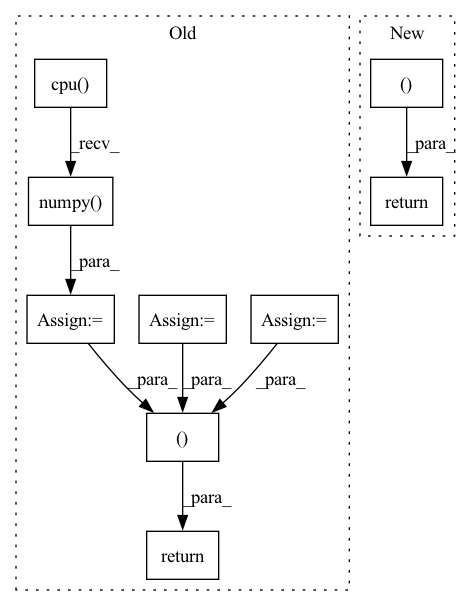

Pattern ID :5446

Before Change
score_of_positive = kg_embedding_model.predict(pos_triple)
scores_subject_based = np.append(arr=scores_of_corrupted_subjects, values=score_of_positive)
indice_of_pos_subject_based = scores_subject_based.size - 1
scores_object_based = np.append(arr=scores_of_corrupted_objects, values=score_of_positive)
indice_of_pos_object_based = scores_object_based.size - 1
_, sorted_score_indices_subject_based = torch.sort(torch.tensor(scores_subject_based, dtype=torch.float),
descending=self.kge_to_descend_sorting[
kg_embedding_model.model_name])
sorted_score_indices_subject_based = sorted_score_indices_subject_based.cpu().numpy()
_, sorted_score_indices_object_based = torch.sort(torch.tensor(scores_object_based, dtype=torch.float),
descending=self.kge_to_descend_sorting[
kg_embedding_model.model_name])
sorted_score_indices_object_based = sorted_score_indices_object_based.cpu().numpy()
// Get index of first occurrence that fulfills the condition
rank_of_positive_subject_based = np.where(sorted_score_indices_subject_based == indice_of_pos_subject_based)[0][
0]
rank_of_positive_object_based = np.where(sorted_score_indices_object_based == indice_of_pos_object_based)[0][0]
return (
rank_of_positive_subject_based,
rank_of_positive_object_based,
)
def evaluate(self, test_triples: np.ndarray):
After Change
rank_of_positive_object_based = scores_of_corrupted_objects.shape[0] - \
np.greater(scores_of_corrupted_objects, score_of_positive).sum()
return (
rank_of_positive_subject_based + 1,
rank_of_positive_object_based + 1,
)
def evaluate(self, test_triples: np.ndarray):
In pattern: SUPERPATTERN
Frequency: 3
Non-data size: 9
Instances
Fragment ID: 19249317
Project Name: pykeen/pykeen
Commit Name: d0af5f9478b457b561f9e88d53fbe9a18f1c2672
Time: 2019-05-15
Author: lvermue@users.noreply.github.com
File Name: src/poem/evaluation/ranked_based_evaluator.py
M Class Name: RankBasedEvaluator
N Class Name: RankBasedEvaluator
M Method Name: _compute_rank(6)
N Method Name: _compute_rank(6)
M Parent Class: AbstractEvalutor
N Parent Class: AbstractEvalutor
M File Name: src/poem/evaluation/ranked_based_evaluator.py
N File Name: src/poem/evaluation/ranked_based_evaluator.py
M Start Line: 146
M End Line: 176
N Start Line: 143
N End Line: 157
'>
Before Change
//compute v loss
target_v_value = (new_min_curr_state_q_value - new_curr_state_log_pi).detach()
v_loss = F.mse_loss(curr_state_v_value, target_v_value)
v_loss_value = v_loss.detach().cpu().numpy()
self.v_optimizer.zero_grad()
v_loss.backward()
self.v_optimizer.step()
//compute q loss
target_q_value = (reward_batch + (1.0 - done_batch) * self.gamma * next_state_target_v_value).detach()
q1_loss = F.mse_loss(curr_state_q1_value, target_q_value)
q2_loss = F.mse_loss(curr_state_q2_value, target_q_value)
q1_loss_value = q1_loss.detach().cpu().numpy()
q2_loss_value = q2_loss.detach().cpu().numpy()
self.q1_optimizer.zero_grad()
q1_loss.backward()
self.q1_optimizer.step()
self.q2_optimizer.zero_grad()
q2_loss.backward()
self.q2_optimizer.step()
//compute policy loss
policy_loss = ((self.alpha * new_curr_state_log_pi) - new_min_curr_state_q_value).mean()
policy_loss_value = policy_loss.detach().cpu().numpy()
self.policy_optimizer.zero_grad()
policy_loss.backward()
self.policy_optimizer.step()
//compute temperature loss
if self.automatic_entropy_tuning:
alpha_loss = -(self.log_alpha * (new_curr_state_log_pi + self.target_entropy).detach()).mean()
alpha_loss_value = alpha_loss.detach().cpu().numpy()
self.alpha_optim.zero_grad()
alpha_loss.backward()
self.alpha_optim.step()
self.alpha = self.log_alpha.exp()
alpha_value = self.alpha.detach().cpu().numpy()
else:
alpha_loss = torch.tensor(0.).to(util.device)
alpha_value = self.alpha.detach().cpu().numpy()
return q1_loss_value, q2_loss_value, v_loss_value, policy_loss_value, alpha_loss_value, alpha_value
def select_action(self, state, evaluate=False):
if type(state) != torch.tensor:
state = torch.FloatTensor([state]).to(util.device)
After Change
new_curr_state_q1_value = self.q1_network(state_batch, new_curr_state_action)
new_curr_state_q2_value = self.q2_network(state_batch, new_curr_state_action)
next_state_q1_value = self.target_q1_network(next_state_batch, next_state_action)
next_state_q2_value = self.target_q2_network(next_state_batch, next_state_action)
next_state_min_q = torch.min(next_state_q1_value, next_state_q2_value)
target_q = (next_state_min_q - self.alpha * next_state_log_pi)
target_q = reward_batch + self.gamma * (1. - done_batch) * target_q
new_min_curr_state_q_value = torch.min(new_curr_state_q1_value, new_curr_state_q2_value)
//compute q loss
q1_loss = F.mse_loss(curr_state_q1_value, target_q.detach())
q2_loss = F.mse_loss(curr_state_q2_value, target_q.detach())
q1_loss_value = q1_loss.detach().cpu().numpy()
q2_loss_value = q2_loss.detach().cpu().numpy()
self.q1_optimizer.zero_grad()
q1_loss.backward()
self.q1_optimizer.step()
self.q2_optimizer.zero_grad()
q2_loss.backward()
self.q2_optimizer.step()
//compute policy loss
policy_loss = ((self.alpha * new_curr_state_log_pi) - new_min_curr_state_q_value).mean()
policy_loss_value = policy_loss.detach().cpu().numpy()
self.policy_optimizer.zero_grad()
policy_loss.backward()
self.policy_optimizer.step()
//compute entropy loss
if self.automatic_entropy_tuning:
alpha_loss = -(self.log_alpha * (new_curr_state_log_pi + self.target_entropy).detach()).mean()
alpha_loss_value = alpha_loss.detach().cpu().numpy()
self.alpha_optim.zero_grad()
alpha_loss.backward()
self.alpha_optim.step()
self.alpha = self.log_alpha.exp()
alpha_value = self.alpha.detach().cpu().numpy()
else:
alpha_loss = torch.tensor(0.).to(util.device)
alpha_value = self.alpha.detach().cpu().numpy()
self.tot_update_count += 1
return q1_loss_value, q2_loss_value, policy_loss_value, alpha_loss_value, alpha_value
def try_update_target_network(self):
if self.tot_update_count % self.update_target_network_interval == 0:
util.soft_update_network(self.q1_network, self.target_q1_network, self.target_smoothing_tau)
'>
Fragment ID: 19249300
Project Name: x35f/unstable_baselines
Commit Name: 0fc82ae6328814fe2dad0c8e0ae1b172d3e5f981
Time: 2021-03-12
Author: ym8411012@126.com
File Name: sac/models.py
M Class Name: SACAgent
N Class Name: SACAgent
M Method Name: update(2)
N Method Name: update(2)
M Parent Class: BaseAgent,torch.nn.Module
N Parent Class: BaseAgent,torch.nn.Module
M File Name: sac/models.py
N File Name: sac/models.py
M Start Line: 75
M End Line: 129
N Start Line: 83
N End Line: 129
'>
Before Change
y = torch.from_numpy(y).type(torch.float).view(-1,1).to(device)
y += shift_label
y /= max_label
batch_fake_images = netG(z, y)
raw_fake_images[tmp:(tmp+batch_size)] = batch_fake_images.cpu().detach().numpy()
raw_fake_counts[tmp:(tmp+batch_size)] = y.cpu().view(-1).detach().numpy()
tmp += batch_size
//remove extra entries
raw_fake_images = raw_fake_images[0:NFAKE]
raw_fake_counts = raw_fake_counts[0:NFAKE]
return raw_fake_images, raw_fake_counts.reshape(-1)
After Change
while tmp < NFAKE:
z = torch.randn(batch_size, GAN_Latent_Length, dtype=torch.float).to(device)
labels = np.random.choice(np.arange(num_classes),size=batch_size,replace=True)
raw_fake_labels[tmp:(tmp+batch_size)] = labels
labels = torch.from_numpy(labels).type(torch.long).to(device)
batch_fake_images = netG(z, labels)
fake_images[tmp:(tmp+batch_size)] = batch_fake_images.cpu().detach().numpy()
tmp += batch_size
//remove extra entries
fake_images = fake_images[0:NFAKE]
raw_fake_labels = raw_fake_labels[0:NFAKE]
raw_fake_labels = raw_fake_labels.astype(np.float)
//convert class labels to raw labels
raw_fake_labels = np.array([class2label[raw_fake_labels[i]] for i in range(NFAKE)])
return fake_images, raw_fake_labels
def SampcDCGAN_given_label(netG, given_label, unique_labels, label2class, GAN_Latent_Length = 128, NFAKE = 10000, batch_size = 500, device="cuda"):
"""
'>
Fragment ID: 19249380
Project Name: ubcdingxin/improved_ccgan
Commit Name: 8a85572c67f2b5e51be8e71eb77edbead26b2c0a
Time: 2020-03-11
Author: dingx92@gmail.com
File Name: CellCounting/Train_cDCGAN.py
M Class Name: AnonimousClass
N Class Name: AnonimousClass
M Method Name: SampcDCGAN(7)
N Method Name: SampcDCGAN(7)
M Parent Class:
N Parent Class:
M File Name: CellCounting/Train_cDCGAN.py
N File Name: CellCounting/Train_cDCGAN.py
M Start Line: 134
M End Line: 159
N Start Line: 136
N End Line: 165